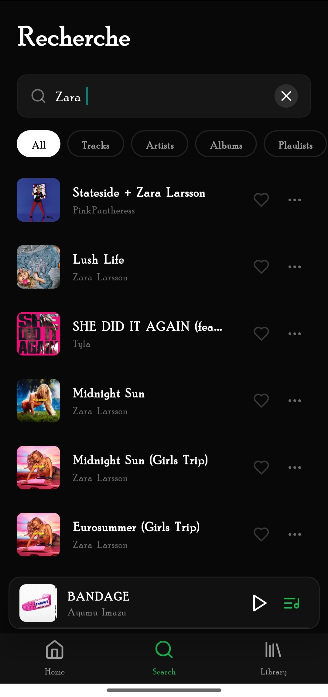
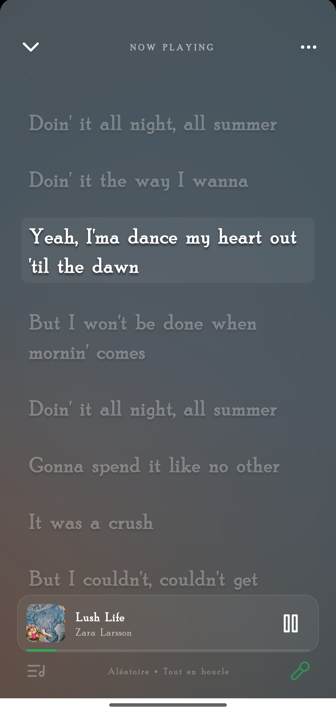
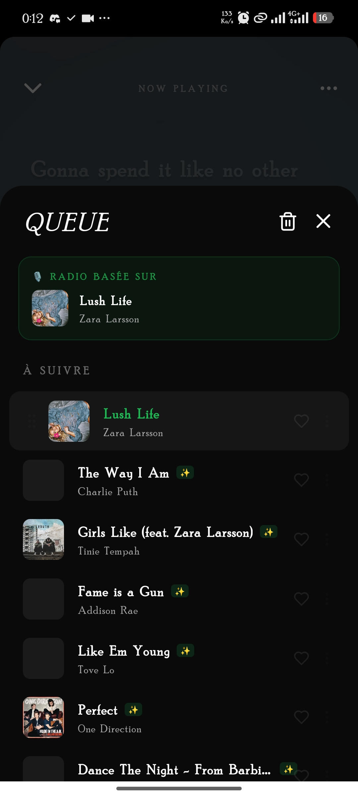
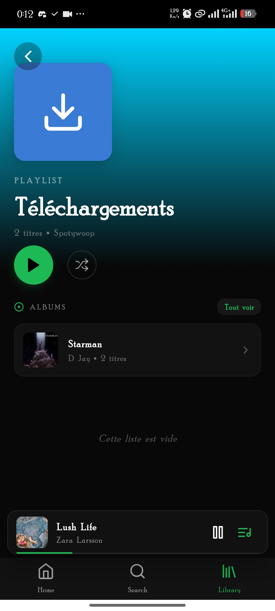
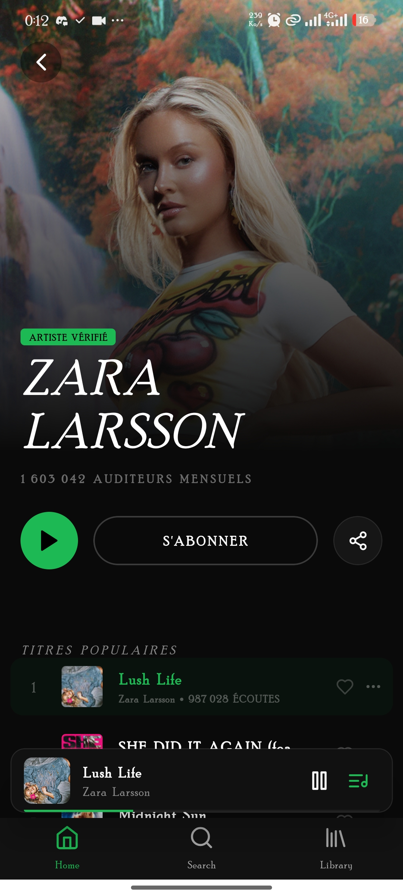

La musique,
sans limites.
Plongez dans un univers musical infini. Des recommandations intelligentes, un mode hors-ligne absolu, et une interface pensée pour la fluidité.

Un moteur de découverte
surpuissant.
Propulsé par l'API Chosic, laissez Spotiwoop créer la radio parfaite basée sur vos goûts actuels. Ne soyez plus jamais à court d'idées.
Tout ce qu'il vous faut.
Et bien plus.
Télécharger maintenant
Paroles Interactives
Chantez en rythme avec notre vue karaoké. Cliquez sur une ligne de texte pour sauter instantanément à ce moment précis de la chanson.

Hors-Ligne
Enregistrez vos albums en un clic. Votre musique vous suit partout.

Lecteur Premium
Une interface de lecture fluide, intuitive et incroyablement esthétique.

Votre bibliothèque,
réinventée.
Gérez vos artistes favoris, organisez vos playlists et retrouvez votre historique d'écoute en un clin d'œil. Une organisation parfaite pour les mélomanes exigeants.
- Téléchargements rapides
- Tri intelligent
- Qualité Audio Supérieure
